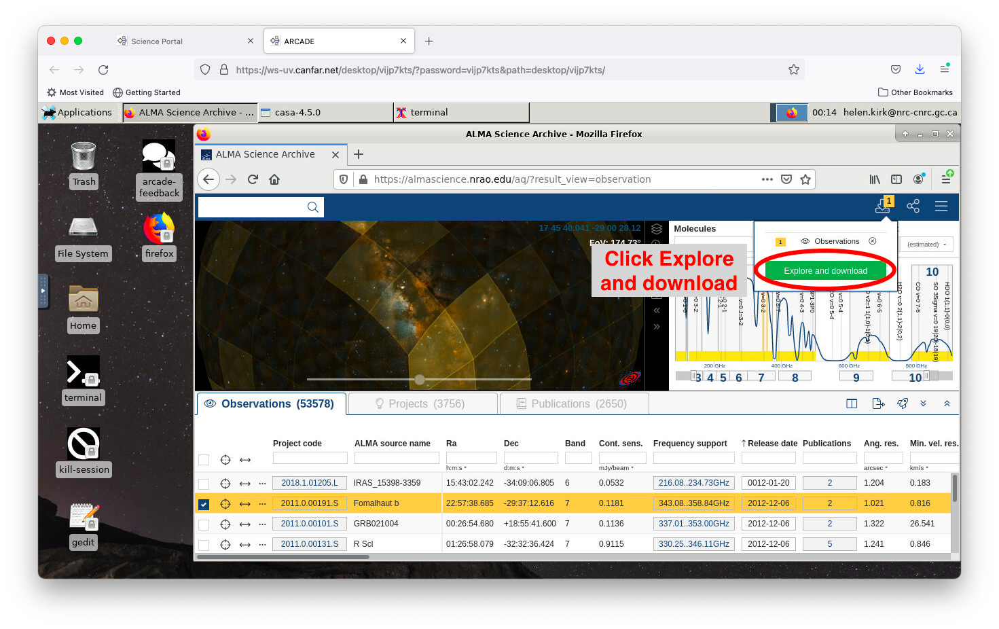
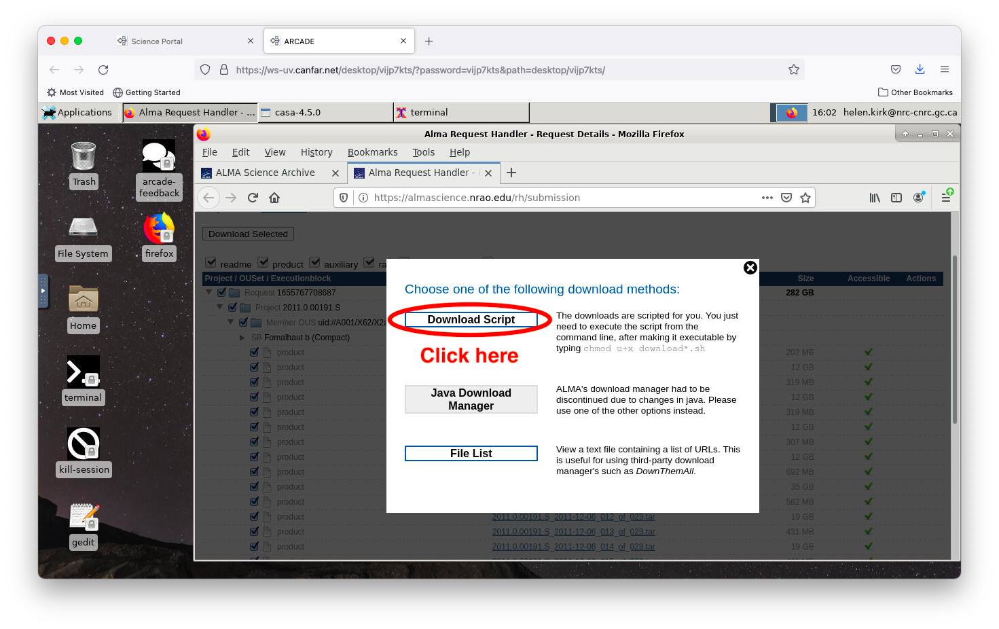
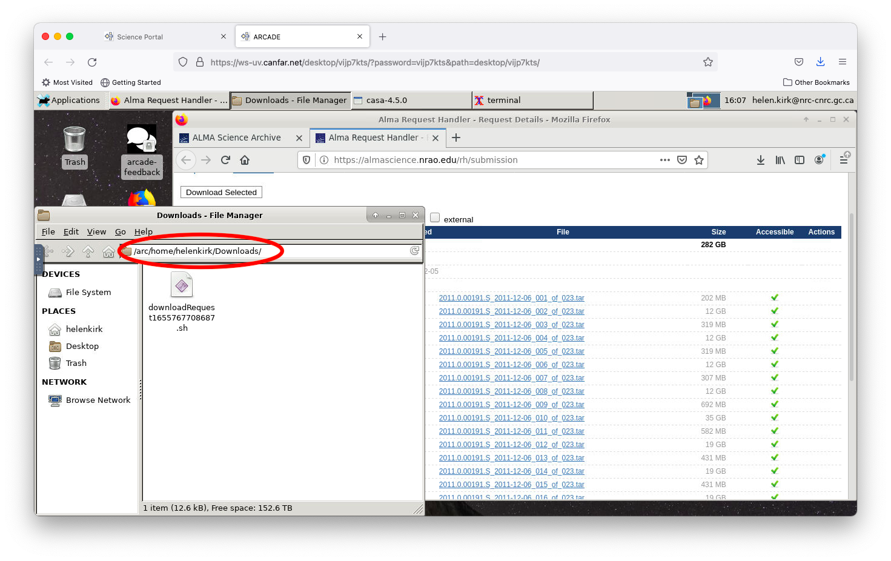
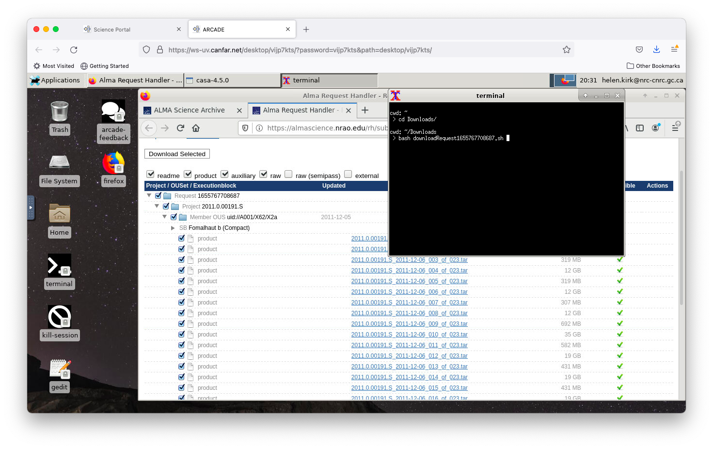

Download data from the ALMA archive (web browser)¶
Downloading data directly from an ALMA archive web query is quite straightforward. Double-click on the Firefox icon on the desktop, and navigate to the ALMA archive.

You can use the filters to help identify the data you are interested in. For more information on using the archive query effectively, see this instructional video: https://almascience.nrao.edu/alma-data/archive/archive-video-tutorials
Select the dataset(s) of interest by ticking the box(es) to the left of each project.

On the upper right panel, click the downward-pointing arrow, then click the green ‘Explore and download’ button that pops up.

In the next window that pops up, select the files that you are interested in and click ‘Download Selected’.

In the pop up window that next appears, click the ‘Download Script’ button.

Save this file to your desktop session.

To locate the file, click the downward-pointing arrow in the top left of the firefox browser, and then double-click the folder icon in the right of the window that pops up.

This will open the File Manager in the directory where your ALMA data download script has been saved. The default is usually under Downloads/ within your home directory.

Open a terminal (double-click the terminal icon), go to the Downloads directory, and run the data download script.

When all of the files have been downloaded, you should see a query about un-tarring (uncompressing) them. Click ‘y’ for yes.

You can now open a CASA terminal to begin your data reduction or analysis.